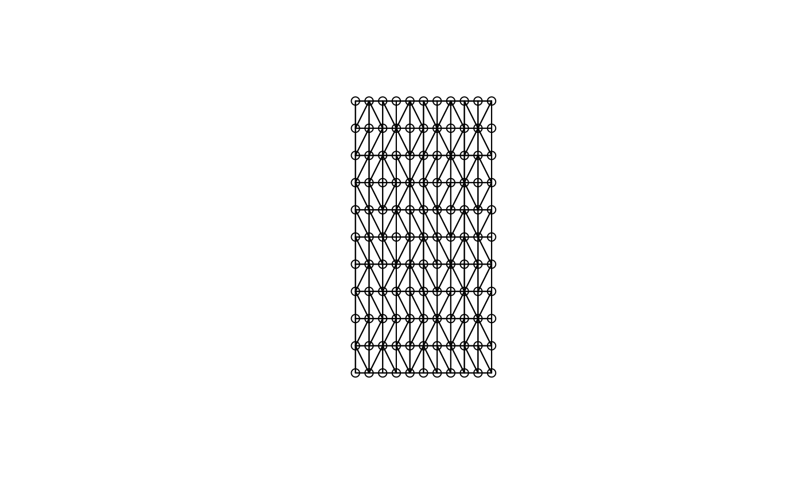
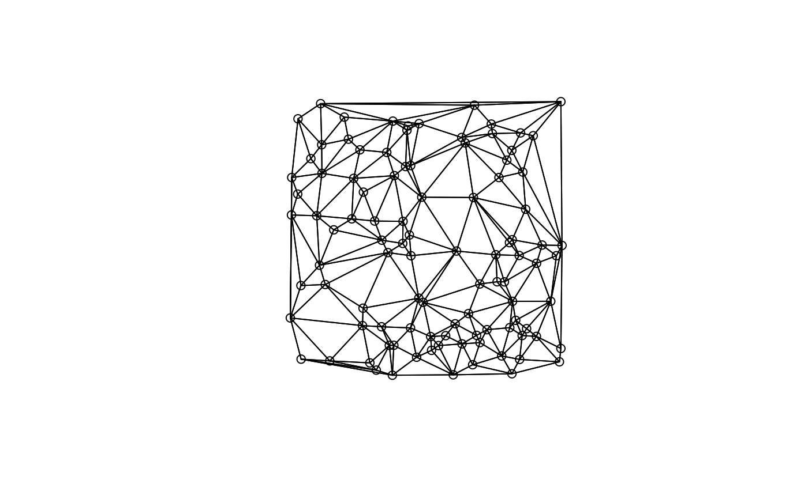

Neighbours list from tri object
tri2nb.RdThe function uses the deldir package to convert a matrix of
two-dimensional coordinates into a neighbours list of class nb
with a list of integer vectors containing neighbour region number
ids.
Details
If coordinates are duplicated, this function cannot be used.
If the coordinates are from a grid, then they need to be ordered
such that the first three are not collinear, so that the first triangle
can be constructed. This can be achieved by randomising the order of
the coordinates (possibly several times), and then re-ordering the order
of the data to match the new order of the neighbour list - if this fix
is used, remember to re-order the row.names argument as well as the
coordinates! Please also note that triangulation of grid points will
give arbitrary diagonal neighbours, which may not be a sensible outcome,
and dnearneigh() may serve better where tri2nb() cannot
be used.
Value
The function returns an object of class nb with a list of integer vectors containing neighbour region number ids.
Author
Roger Bivand Roger.Bivand@nhh.no
Examples
columbus <- st_read(system.file("shapes/columbus.gpkg", package="spData")[1], quiet=TRUE)
coords <- st_centroid(st_geometry(columbus), of_largest_polygon=TRUE)
ind <- row.names(columbus)
suppressPackageStartupMessages(require(deldir))
col.tri.nb <- tri2nb(coords, row.names=ind)
plot(st_geometry(columbus), border="grey")
plot(col.tri.nb, coords, add=TRUE)
title(main="Raw triangulation links", cex.main=0.6)
x <- seq(0,1,0.1)
y <- seq(0,2,0.2)
xy <- expand.grid(x, y)
try(xy.nb <- tri2nb(xy))
seed <- 1234
xid <- sample(1:nrow(xy))
xy.nb <- tri2nb(xy[xid,])
plot(xy.nb, xy[xid,])

# example of reading points with readr::read_csv() yielding a tibble
load(system.file("etc/misc/coords.rda", package="spdep"))
class(coords)
#> [1] "spec_tbl_df" "tbl_df" "tbl" "data.frame"
nb <- tri2nb(coords)
plot(nb, coords)
